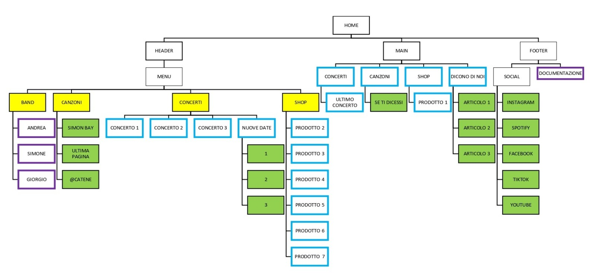

ABSTRACT
Il sito web è proposto come presentazione e descrizione della band Tonic, una piccola realtà musicale ma di grande talento. É proprio per questo motivo che è stato creato tale sito web: renderli visibili ad un pubblico più vasto e fare in modo che tante persone possano appassionarsi ai loro singoli, cercando di aumentare ancor di più la cerchia di fan e ascoltatori
PROJECT MANGEMENT PLAN
1. BENCHMARKING
OBIETTIVI
L’obiettivo principale che ci siamo posti nella creazione del sito è voler realizzare un sito web che sia completo sia dal punto di vista dei contenuti sia dal punto di vista della grafica in modo tale da poter promuovere e risaltare ogni aspetto della band.
TARGET
Il sito è ricolto ai ragazzi e alle ragazze dai 16 ai 30 anni che hanno voglia di conoscere e scoprire nuovi talenti
COMPETITORS
2. STRUTTURA E LAYOUT
ARCHITETTURA DEL SITO
Fig. 1 - Architettura del sito web
In Fig. 1 possiamo vedere una rappresentazione grafica dell’architettura del sito: troviamo la home che è suddivisa in header, main e footer. Nell’header possiamo trovare il menu con le pagine band, canzoni, concerti e shop (riquadro giallo). Nel main possiamo trovare 4 sezioni (riquadro con bordo azzurro): la prima è la sezione “concerti” nella quale possiamo trovare l’ultimo concerto; la seconda è la sezione “canzoni”, nella quale troviamo una spiegazione dell’ultimo singolo con il relativo link esterno (riquadro verde) per poterlo ascoltare; la terza è la sezione “shop” nella quale troviamo un solo prodotto e la quarta sezione è “dicono di noi” nella quale ci sono i 3 articoli nei quali si parla della band con i relativi link esterni (riquadri verdi) per poter leggerli interamente. Nel footer possiamo trovare le icone dei social con i rispettivi link esterni (riquadri verdi) per essere reindirizzati direttamente al social, il link per la documentazione e l’abstract. Alla pagina “band” troviamo la descrizione della stessa e la descrizione dei componenti a cui si può accedere tramite un link interno alla pagina stessa (riquadro con il bordo viola). Alla pagina “canzoni” troviamo una spiegazione dei singoli con i rispettivi link esterni per poterli ascoltare (riquadri verdi). Alla pagina “concerti” abbiamo un elenco degli ultimi concerti e una sezione con le date in programma con i rispettivi link esterni (riquadri verdi) per poter comprare il biglietto. Alla pagina “shop” vediamo la selezione dei prodotti di merchandising della band.
WIREFRAME
Fig. 2 - Wireframe dell'Homepage

Fig. 3 - Wireframe della pagina Band
Fig. 4 - Wireframe della pagina Canzoni
Fig. 5 - Wireframe della pagina Concerti
Fig. 6 - Wireframe della pagina Shop
Fig. 7 - Wireframe della Documentaizone
LOOK AND FEEL
3. LINGUAGGI E STRUMENTI
LINGUAGGI
HTML, CSS, Bootstrap, Java Script
STRUMENTI
- SublimeText2 per la scrittura del codice
- Google Chrome per la visualizzazione del sito
- fontawesome.com per le icone
- Google font per la scelta delle font
- W3schools - colorspicker per l’individuazione dei colori
- github.com per la pubblicazione online
- Instagram e WhatsApp per la promozione
COMMUNICATION STRATEGY PLAN
1. BACKGROUND
Ci sono tantissimi giovani talenti in giro ma sono poco conosciuti perché il pubblico è restio o semplicemente perché fanno fatica a prendere piede. I siti web dei grandi artisti sono moltissimi e funzionano proprio perché i protagonisti sono grandi artisti a differenza di siti web degli artisti poco conosciuti o emergenti che non funzionano tantissimo proprio perché non hanno un grande seguito. Nonostante ciò si possono trovare dei pro e dei contro anche nei siti web dei grandi artisti
2. OBIETTIVI COMUNICATIVI
Il progetto vuole far conoscere questa band friulana poco seguita ma piena di talento e di voglia di arrivare ad un pubblico più ampio e disomogeneo.
3. TARGET AUDIENCE E MESSAGGIO
il sito web si rivolge principalmente alle persone dai 16 ai 30 anni e a tutte le persone che vogliono conoscere nuovi talenti e cominciare a seguirli. Dato che questa fascia d’età è molto legata ai social media, questi sono i principali strumenti con cui si riesce a invogliare le persone a consultare un sito web di questo calibro. Ovviamente possiamo prendere in considerazione anche un target secondario formato dagli over 40 anni, ovvero le famiglie della fascia d’età menzionata precedentemente che ascoltano le canzoni della band grazie ai figli e/o nipoti.
4. PROMOZIONE
il sito web è stato promosso principalmente online, tramite i social media come Instagram e WhatsApp
5. VALUTAZIONE DEI RISULTATI